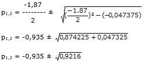

Aufgabe 138 Ein Sparer hat 4000 € angelegt. Nach einem Jahr hebt er 500 € ab,gleichzeitig senkt die Bank den Zinssatz um 0,5 %. Mit wie viel Prozent hat die Bank den ursprünglichen Betrag verzinst, wenn der Sparer nach 2 Jahren noch 3672 € auf seinem Konto hat? Der Zinssatz in Prozent sei x x p = ----- 100 Guthaben nach einem Jahr 4000(1 + p) € Nach Abzug von 500 € verbleiben 4000(1 + p) - 500 € Neuer Zinssatz x - 0,5 --> p - 0,005 Guthaben nach dem 2. Jahr ((4000(1 + p) - 500))(1 + (p - 0,005)) ((4000(1 + p) - 500))(1 + (p - 0,005)) = 3672 (4000 + 4000p -500)(0,995 + p) = 3672 (3500 + 4000p)(0,995 + p) = 3672 3482,5 + 3500p + 3980p - 4000p2 = 3672 |*(-1) 4000p2 + 7480p - 3482,5 = -3672 | +3672 4000p2 + 7480p - 189,5 = 0 p2 + 1,87p - 0,047375 = 0 p, q - Formel p = 1,87 ; q = -0,047375  p1,2 = -0,935 ± 0,96 p1 = -0,935 + 0,96 = 0,025 --> 2,5% p2 = -0,935 - 0,96 = -1,895 keine Lösung, negativer Zinssatz